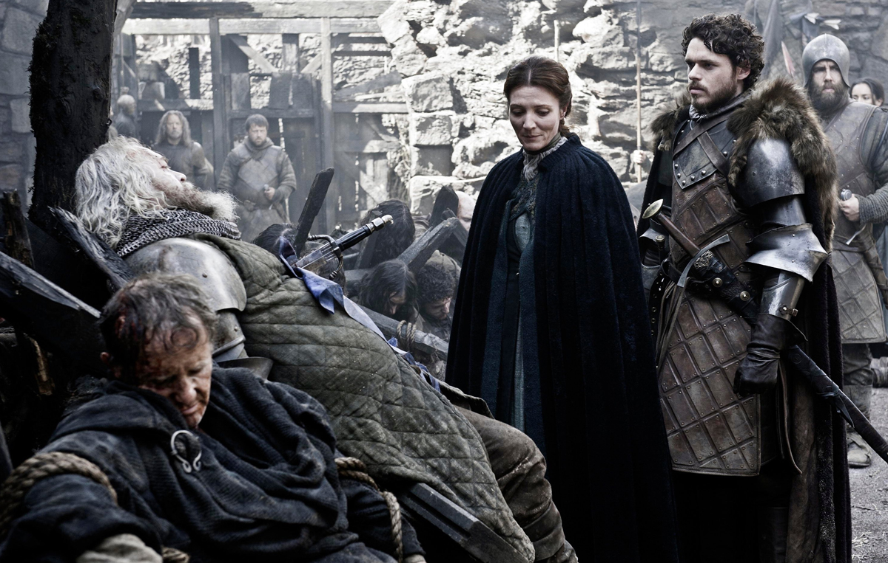
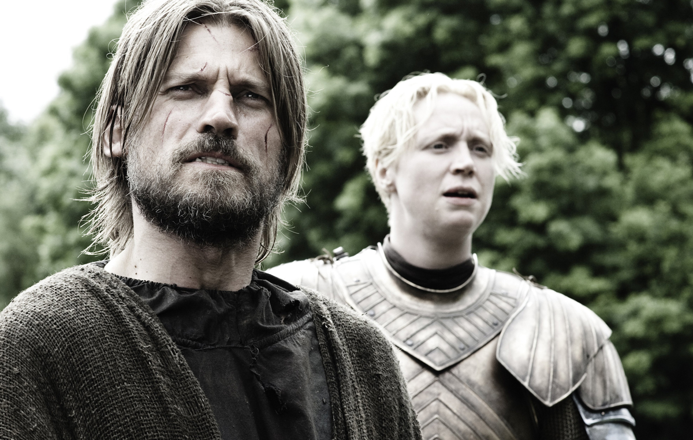
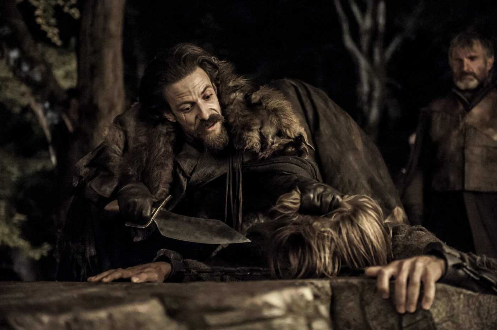
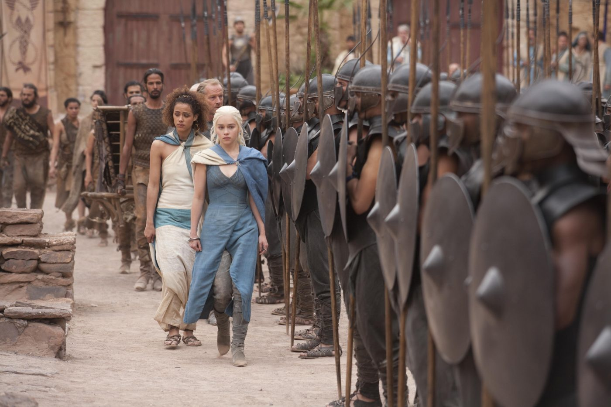
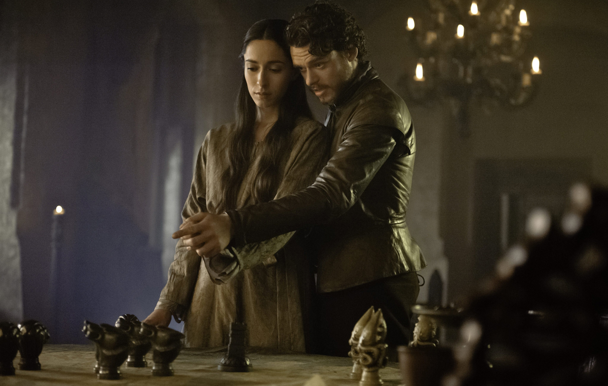
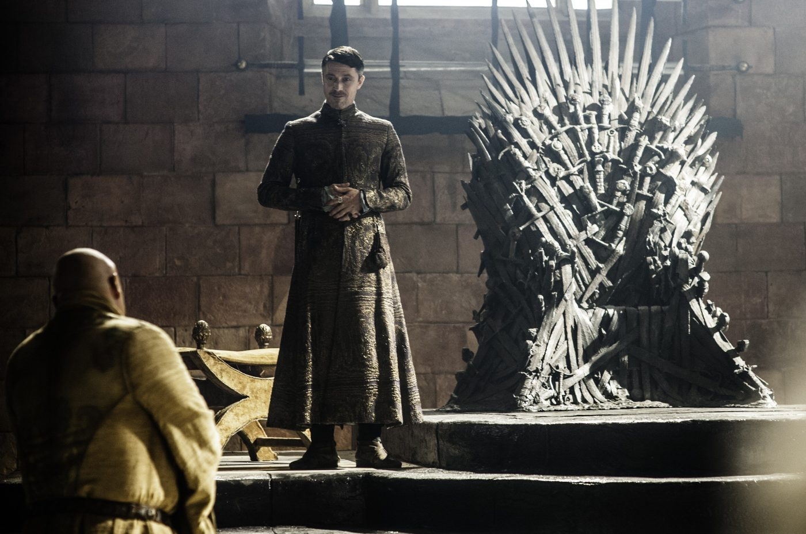
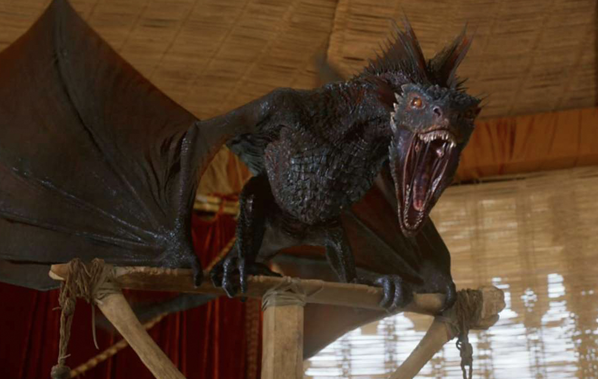
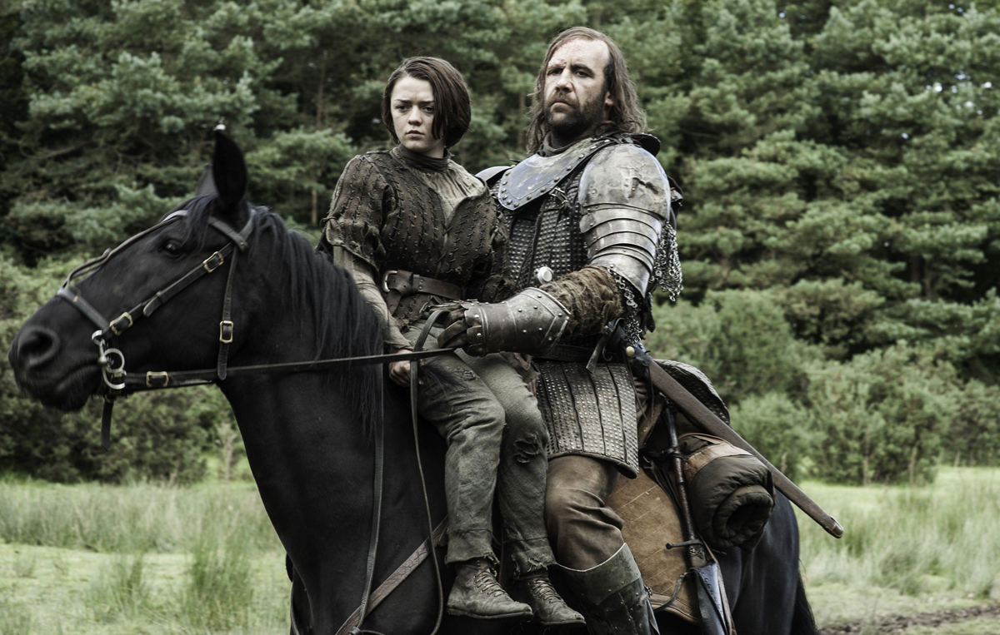
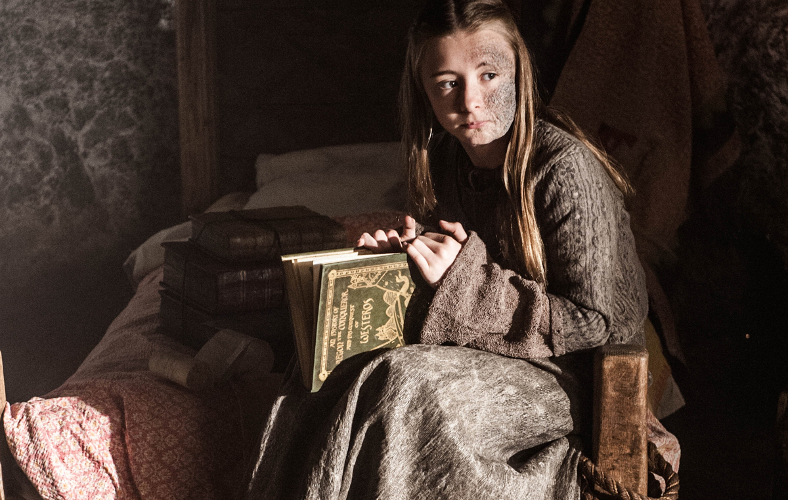

3ª TEMPORADA
Episódio 01 – Valar Dohaeris
Sinopse: Jon é trazido perante o Rei Para Lá da Muralha; Os sobreviventes da Patrulha da Noite recuam para o sul; Tyrion pede a sua recompensa; Mindinho oferece a Sansa uma saída; Cersei é anfitriã de um jantar para a família real; Dany navega para a Baía dos Escravos.

Episódio 02 – Dark Wings, Dark Words
Sinopse: Sansa fala demais; Shae pede um favor a Tyrion; Jaime encontra um jeito de passar o tempo; Arya encontra a Irmandade Sem Estandartes.

Episódio 03 – The Walk of Punishment
Sinopse: Tyrion ganha novas responsablidades; Jon é levado ao Punho dos Primeiros Homens; Daenerys encontra os escravagistas; Jaime faz um acordo com seus captores.

Episódio 04 – And Now His Watch is Ended
Sinopse: A Patrulha da Noite se guarnece; Varys encontra seu melhor; Arya é levada ao líder da Irmandade; Daenerys faz uma troca.

Episódio 05 – Kissed by Fire
Sinopse: O Cão é julgado pelos deuses; Jaime é julgado; Jon supera a si mesmo; Robb é traído; Tyrion descobre o custo de um casamento.

Episódio 06 – The Climb
Sinopse: Tywin planeja uniões estratégicas para os Lannister; Melisandre faz uma visita ao Tridente; Robb se compromete a reparar a sua aliança com a Casa Frey; Roose Bolton decide o que fazer com Jaime Lannister; Jon, Ygritte e os selvagens enfrentam uma escalada assustadora.

Episódio 07 – The Bear and the Maiden Fair
Sinopse: Dany troca presentes com um senhor de escravos do lado fora de Yunkai; Sansa sofre com seu destino; Shae irrita-se com nova situação de Tyrion; Tywin aconselha o rei; Melisandre revela um segredo a Gendry; Brienne enfrenta um adversário formidável em Harrenhal.

Episódio 08 – Second Sons
Sinopse: Porto Real promove um casamento; Tyrion e Sansa passam a noite juntos; Dany se encontra com o Bastardo do Titã; Davos exige provas de Melisandre; Sam e Gilly encontram um senhor mais velho.

Episódio 09 – The Rains of Castamere
Sinopse: Robb apresenta-se a Walder Frey; Edmure conhece sua noiva; Jon enfrenta seu teste mais difícil; Bran descobre uma novo dom; Daario e Jorah debatem como conquistar Yunkai; A Casa Frey une-se à Casa Tully.

Episódio 10 – Mhysa
Sinopse: Joffrey desafia Tywin. Bran conta uma história de fantamas. Em Pedra do Dragão, a justiça vem de um lugar estranho. Daenerys tenta descobrir se é uma conquistadora ou uma libertadora enquanto é aclamada como “Mysha” (mãe) pelo exército de escravos libertos.
